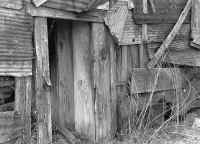

<!DOCTYPE HTML PUBLIC "-//W3C//DTD HTML 4.01 Transitional//EN"        "http://www.w3.org/TR/html4/loose.dtd">
<html lang="en">

<head>
<title>Gordon Grice:&nbsp; The Widow and the Suicide - Henderson State 
University</title>
<meta http-equiv="Content-Language" content="en-us">
<meta http-equiv="Content-Type" content="text/html; charset=windows-1252">
<meta name="GENERATOR" content="Microsoft FrontPage 5.0">
<meta name="ProgId" content="FrontPage.Editor.Document">
<meta name="copyright" content="Copyright © 2002 Henderson State University">
<meta name="rating" content="General">
</head>

<body background="ARlogoborder.jpg" link="#006600" vlink="#006600" alink="#006600" bgcolor="#FFFFFF">

<div align="right">
  <table border="0" width="85%">
    <tr>
      <td width="100%" align="left">
        <blockquote>
        <p class="MsoHeader"><b><span style="font-size:18.0pt;mso-bidi-font-size:10.0pt;
font-family:Arial"><font color="#006600">Gordon Grice</font></span></b></p>
        </blockquote>
        <p class="MsoHeader"><b><span style="font-family:
&quot;Times New Roman&quot;">The Widow and the Suicide<o:p>
        </o:p>
        </span></b></p>
        <blockquote>
          <p class="MsoNormal"><span style="font-family:&quot;Times New Roman&quot;"><i>.
          . . a wheel of thread<br>
          And straining cables wet with silver dew.<br>
          A sudden passing bullet shook it dry.<br>
          The indwelling spider ran to greet the fly,<br>
          But finding nothing, sullenly withdrew.</i></span><span style="mso-tab-count: 1; font-family: Times New Roman"><br>
           </span><span style="font-family: Times New Roman; mso-tab-count: 1">&nbsp;&nbsp;&nbsp;&nbsp;&nbsp;&nbsp;&nbsp;&nbsp;&nbsp;
          </span><span style="mso-char-type: symbol; mso-symbol-font-family: Symbol; font-family: Symbol; mso-ascii-font-family: Times New Roman; mso-hansi-font-family: Times New Roman">¾</span><span style="font-family: Symbol; mso-char-type: symbol; mso-symbol-font-family: Symbol; mso-ascii-font-family: Times New Roman; mso-hansi-font-family: Times New Roman">
          </span><span style="font-family:&quot;Times New Roman&quot;">Robert
          Frost, “Range-Finding”<o:p>
          </o:p>
          </span></p>
        </blockquote>
        <p class="MsoNormal"><span style="font-family:&quot;Times New Roman&quot;"><b><font size="7"><a href="images/jacksonM.jpg">
        </a></font><font color="#006600" size="5">A</font></b> year before, a man had killed himself with a borrowed pistol in
        the little shack.<span style="mso-spacerun:
yes"> </span>The moral dimension of his death meant nothing to the
        invertebrates I came looking for.<span style="mso-spacerun: yes"> </span>His
        death only meant that such creatures had gone unmolested in this patch
        of shelter for a while, making the place a good hunting ground.<o:p>
        </o:p>
        </span></p>
        <p class="MsoNormal"><span style="font-family:&quot;Times New Roman&quot;">I had heard about the suicide when it was news, but since then I
        had just about forgotten it.<span style="mso-spacerun: yes"> </span>The
        farmer who owned the shack gave me permission to explore a certain
        stretch of ground.<span style="mso-spacerun:
yes"> </span>“You can go in the hired hand’s shack if you want,” he
        said.<span style="mso-spacerun: yes"> </span>“Nobody lives there
        anymore.”<o:p>
        </o:p>
        </span></p>
        <p class="MsoNormal"><span style="font-family:&quot;Times New Roman&quot;">I walked into the shack and found a web right away.<span style="mso-spacerun: yes">
        </span>It was a profusion of erratic angles.<span style="mso-spacerun: yes">
        </span>About two feet above the cement floor its strands became so
        numerous as to form a loose cloud the color of dirty cotton.<span style="mso-spacerun: yes">
        </span>Below that, the strands were so sparse I could lose sight of
        them.<span style="mso-spacerun:
yes"> </span>Each strand was invisible from some points of view, sheathed
        in glare from other angles, so that the entire web seemed to shift like
        a hologram as I walked around it.<o:p>
        </o:p>
        </span></p>
        <p class="MsoNormal"><span style="font-family:&quot;Times New Roman&quot;">Although it was as big as a modest coffee table, it was a simple
        cobweb of the sort that frequently annoys fastidious housekeepers.<span style="mso-spacerun: yes">
        </span>The same person who admires the beauty of an orb web in his
        garden may assiduously destroy every cobweb he finds in his kitchen.<span style="mso-spacerun: yes">
        </span>This prejudice is a microcosm of human failing.<span style="mso-spacerun: yes">
        </span>We like the orb web because its kind of order is readily
        apparent.<span style="mso-spacerun: yes"> </span>The cobweb has
        its own brand of order.<span style="mso-spacerun: yes"> </span>It
        is, as Emily Dickinson put it, a continent of light, a patch of
        constructed ground from which the spider may never stray.<span style="mso-spacerun: yes">
        </span>It is also, among other things, an efficient snare.<o:p>
        </o:p>
        </span></p>
        <p class="MsoNormal"><span style="font-family:&quot;Times New Roman&quot;">This particular cobweb advertised its efficacy to anyone who
        cared to look at the graveyard beneath it.<span style="mso-spacerun: yes">
        </span>Twenty-six wing-sheathes of June beetles lay on the cement.<span style="mso-spacerun: yes">
        </span>Each sheathe--they are really the beetles’ front wings,
        modified into protective armor--was the color of fresh brown shoe
        polish.<span style="mso-spacerun: yes"> </span>They reminded me of
        the fenders of old Chevys; the place looked like a miniature junkyard.<span style="mso-spacerun: yes">
        </span>In the role of discarded tires were the carcasses of the
        primitive creatures children call roly-polies or pill bugs.<span style="mso-spacerun: yes">
        </span>Their simple and effective strategy for defense is to curl into a
        ball, closing their antennae and their fourteen legs and their soft
        bellies in a sphere of armor.<o:p>
        </o:p>
        </span></p>
        <p class="MsoNormal"><span style="font-family:&quot;Times New Roman&quot;">An effective strategy, that is, until the roly-poly wanders into
        a cobweb.<span style="mso-spacerun: yes"> </span>He leads with his
        antennae and gets them stuck in a strand of web anchored to the ground.<span style="mso-spacerun: yes">
        </span>When he rolls reflexively into a ball, he curls around the fatal
        strand, perhaps touching the glue with every limb he has.<span style="mso-spacerun: yes">
        </span>He’s hog-tied himself, and the spider can take her time
        dispatching him.<o:p>
        </o:p>
        </span></p>
        <p class="MsoNormal"><span style="font-family:&quot;Times New Roman&quot;">I looked into the corner of the shack, where the web reached
        behind an exposed wall stud.<span style="mso-spacerun: yes"> </span>There
        I saw the spider’s retreat, a thickened bubble of filthy silk.<span style="mso-spacerun: yes">
        </span>In the shadow near the retreat hung the spider--a profusion of
        crooked legs, the spherical black belly marked with a distorted
        hourglass the color of dried blood.<span style="mso-spacerun: yes">
        </span>It was a black widow.<o:p>
        </o:p>
        </span></p>
        <p class="MsoNormal"><span style="font-family:&quot;Times New Roman&quot;">In a heap of junk outside the shack I found a rusted chisel.<span style="mso-spacerun: yes">
        </span>A few yards away was a barbed wire fence, and one of its posts
        seemed deformed with bulbous tumors which were actually cicadas.<span style="mso-spacerun: yes">
        </span>They were newly emerged from their hibernation in the ground,
        most of them still in the gray-brown shells they had climbed the fence
        post to shed.<span style="mso-spacerun: yes"> </span>One of them
        had already shucked its husk.<span style="mso-spacerun: yes"> </span>Its
        body was tinged with green like the living subcutaneous layer of a
        sapling--a color that would give way to gold and white if the creature
        lived another hour.<span style="mso-spacerun: yes"> </span>It was
        trying to spread its wet translucent wings to dry.<span style="mso-spacerun: yes">
        </span>I rejected this one in favor of a cicada whose shell was just
        beginning to split down the back.<span style="mso-spacerun: yes"> </span>Either
        one would have suited my need.<span style="mso-spacerun: yes"> </span>I
        suppose I chose the one in the shell because of a vague intuition about
        justice--no one should die while learning to spread his wings, or some
        such sentiment.<o:p>
        </o:p>
        </span></p>
        <p class="MsoNormal"><span style="font-family:&quot;Times New Roman&quot;">After gathering up the cicada and the chisel, I returned to the
        dead man’s shack to make the capture.<span style="mso-spacerun: yes">
        </span>These tools were not ideal for the purpose, but they were handy.<span style="mso-spacerun: yes">
        </span>I tossed the cicada into the web.<span style="mso-spacerun: yes">
        </span>The slice of green hide showed through the burst seam on its
        back.<span style="mso-spacerun:
yes"> </span>The creature resembled some ponderous dinosaur in miniature.<span style="mso-spacerun: yes">
        </span>The cicada is one of the strongest insects, but the slow churning
        of its digging-claws could not free it from the widow web.<span style="mso-spacerun: yes">
        </span>The widow emerged immediately from her hiding place, rushing out
        toward the cicada.<span style="mso-spacerun:
yes"> </span>When she was too far out to make a quick escape, I slashed at
        the web with the chisel.<span style="mso-spacerun: yes"> </span>The
        tearing silk sounded like grease popping in a skillet.<o:p>
        </o:p>
        </span></p>
        <p class="MsoNormal"><span style="font-family:&quot;Times New Roman&quot;">My strategy was to maroon the widow on the floor, where she would
        be easy to capture in a jelly jar I had brought along.<span style="mso-spacerun: yes">
        </span>Many strands clung to the chisel.<span style="mso-spacerun: yes">
        </span>When I tried to twist the tool out of their sticky grasp, they
        wound around it; it was like the paper cone at the center of a swirl of
        cotton candy.<span style="mso-spacerun: yes"> </span>The widow
        scrambled for her retreat even as all her aerial avenues wrenched about
        and altered their directions in her claws.<span style="mso-spacerun: yes">
        </span>She ran along the strands to the chisel where they all converged.<span style="mso-spacerun: yes">
        </span>She ran up the chisel to the hand that held it.<span style="mso-spacerun: yes">
        </span>She ran up the hand to the forearm behind it.<o:p>
        </o:p>
        </span></p>
        <p class="MsoNormal"><span style="font-family:&quot;Times New Roman&quot;">I screamed, cursed, danced like an idiot, and ended by dislodging
        the spider from my arm without getting bitten.<span style="mso-spacerun: yes">
        </span>She managed to attach a new silk line to my wrist as she
        fell--the point of attachment tickled as if butterfly-kissed.<span style="mso-spacerun: yes">
        </span>The line paid out from the spinnerets at the rear of her abdomen,
        slowing her fall.<span style="mso-spacerun: yes"> </span>She flung
        her legs wide, ready to catch anything that might break her fall.<span style="mso-spacerun: yes">
        </span>Touching down lightly on the cement, she ran, her globose abdomen
        making a preposterously large burden.<span style="mso-spacerun: yes">
        </span>She looked like Santa Claus rushing away with his bag of gifts.<span style="mso-spacerun: yes">
        </span>Panting with fear, I nonetheless managed to set the jar in her
        path and prod her into it.<o:p>
        </o:p>
        </span></p>
        <p class="MsoNormal"><span style="font-family:&quot;Times New Roman&quot;">The cicada lumbered away on the cement like a wind-up toy,
        trailing ten inches of silk.<o:p>
        </o:p>
        </span></p>
        <p class="MsoNormal">***</p>
        <p class="MsoNormal"><span style="font-family:&quot;Times New Roman&quot;">Before stumbling onto the dead man’s shack, I’d meant to look
        for black widows in junk.<o:p>
        </o:p>
        </span></p>
        <p class="MsoNormal"><span style="font-family:&quot;Times New Roman&quot;">A neglected pile of bricks, for example, is often a fertile
        ground for widow-hunting.<span style="mso-spacerun:
yes"> </span>Every hole in a brick is a chance to find something
        interesting.<span style="mso-spacerun: yes"> </span>Sometimes a
        cockroach has died in a brick cavity, having misjudged his own size.<span style="mso-spacerun: yes">
        </span>He lies lodged and dead.<span style="mso-spacerun: yes"> </span>And
        sometimes, a black widow will unfold herself, like a nightmare, from the
        brick.<span style="mso-spacerun: yes"> </span>She looks unreal:
        too perfectly round, too clean and sleek to lie in such rot, or even to
        live in this world.<span style="mso-spacerun: yes"> </span>She is
        more like something plastic, cast in a mold, immune to dirt and
        imperfection.<o:p>
        </o:p>
        </span></p>
        <p class="MsoNormal"><span style="font-family:&quot;Times New Roman&quot;">In pursuing my unorthodox hobby, I’ve found black widow webs
        inside broken-down combines; beneath sheet metal; stretched across the
        blade of a garden plow; under railroad ties used for landscaping<span style="font-size:12.0pt">—</span>the
        thumb-thick bolt-holes in these are ready-made widow retreats.<span style="mso-spacerun: yes">
        </span>All manner of human implements are fit for a widow’s use.<o:p>
        </o:p>
        </span></p>
        <p class="MsoNormal"><span style="font-family:&quot;Times New Roman&quot;">My family and I were sitting at a picnic table in a public park
        recently when my wife looked down, saw a web just above her lap, tore at
        it, recognized the distinctive crackle, and abruptly shooed everyone
        away.<span style="mso-spacerun: yes"> </span>Beneath the table,
        the cement was littered with broken beer bottles.<span style="mso-spacerun: yes">
        </span>I scooted underneath for a look, careful of the shards underfoot
        and the web overhead.<span style="mso-spacerun: yes"> </span>The
        table was a cement slab with steel supports, and the web covered most of
        its underside.<span style="mso-spacerun: yes"> </span>The obvious
        place for the spider to hide was the most inaccessible spot, where three
        supports met in a cement recess.<span style="mso-spacerun: yes"> </span>I
        looked everywhere else first, partly to find out where I could put my
        hand safely, partly because I couldn’t figure a way to approach the
        spider in that protected place without risking a bite on the head or
        hand.<span style="mso-spacerun: yes"> </span>Eventually I found a
        twig that branched at right angles.<span style="mso-spacerun: yes">
        </span>I used it to prod around a corner.<span style="mso-spacerun: yes">
        </span>It takes a delicate touch because, anatomically speaking, a
        spider is nothing more than a water balloon.<span style="mso-spacerun: yes">
        </span>A black widow’s extravagantly dangerous venom grants it no
        special durability.<span style="mso-spacerun:
yes"> </span>It is, in fact, a particularly delicate spider, virtually
        defenseless outside its web.<span style="mso-spacerun: yes"> </span>In
        the unlikely event you were to pick one up with your thumb and
        forefinger, your grip might kill it.<o:p>
        </o:p>
        </span></p>
        <p class="MsoNormal"><span style="font-family:&quot;Times New Roman&quot;">My gentle poking produced a response.<span style="mso-spacerun: yes">
        </span>A widow came rappelling down from the cement.<span style="mso-spacerun: yes">
        </span>Soon she was descending slowly in open air, paying out an
        invisible strand.<span style="mso-spacerun: yes"> </span>I placed
        a can which had once held baby formula on the ground to catch her.<o:p>
        </o:p>
        </span></p>
        <p class="MsoNormal"><span style="font-family:&quot;Times New Roman&quot;">The literature on widows is full of their ingenious conversions
        of artifacts into web sites.<span style="mso-spacerun: yes"> </span>A
        mother widow and her brood of hatchlings were found in the front seat of
        a stored car.<span style="mso-spacerun: yes"> </span>Widows have
        been found in a police call box, in shoes, in well-houses and lawn
        furniture and bureau drawers and wardrobes.<span style="mso-spacerun:
yes"> </span>Last spring, when the ground was still slushy with
        half-melted snow, a friend told me he brought in a log from the woodpile
        and fed it to the fire, only to notice at the last minute a widow
        slumberous from the winter cold.<span style="mso-spacerun: yes"> </span>The
        fire revived the widow, then consumed her as she scrambled to escape.<span style="mso-spacerun: yes">
        </span>A few days after I heard this story, another friend recounted a
        nearly identical experience.<o:p>
        </o:p>
        </span></p>
        <p class="MsoNormal"><span style="font-family:&quot;Times New Roman&quot;">Widows thrive in outhouses<span style="font-size:12.0pt">—</span>that used to be the most common site
        of human-widow encounters, before indoor plumbing spread across the
        country.<span style="mso-spacerun: yes"> </span>The cinderblock is
        now the artifact most likely to connect human skin with widow fangs, and
        construction workers are the most likely victims.<span style="mso-spacerun: yes">
        </span>People who go under houses to work on pipes or wires get bitten,
        too.<o:p>
        </o:p>
        </span></p>
        <p class="MsoNormal"><span style="font-family:&quot;Times New Roman&quot;">The widow is commensal with us.<span style="mso-spacerun: yes">
        </span>It lives on our labors for free, providing us with nothing
        substantial in return (most of the insects it eats are not pests) and
        generally doing us no harm.<span style="mso-spacerun: yes"> </span>For
        every widow we see, many more are ensconced in our cast-offs and
        accouterments, living their silken lives ignorant of the human forces
        that shape their landscapes.<o:p>
        </o:p>
        </span></p>
        <p class="MsoNormal"><span style="font-family:&quot;Times New Roman&quot;">“The Spider holds a Silver Ball / In unperceived Hands,”
        Dickinson wrote, “And dancing softly to Himself / His Yarn of Pearl<span style="font-size:12.0pt">—</span>unwinds.”<o:p>
        </o:p>
        </span></p>
        <p class="MsoNormal"><o:p><span style="font-family:&quot;Times New Roman&quot;">***
        </span></p>
        <p class="MsoNormal"><span style="font-family:&quot;Times New Roman&quot;">Even spiders that don’t use their silk for snares may use them
        to extend the sense of touch.<span style="mso-spacerun: yes"> </span>The
        tarantula lays a starburst of strands around its burrow; the movement of
        the silk tells the tarantula when an insect is within its reach.<o:p>
        </o:p>
        </span></p>
        <p class="MsoNormal"><span style="font-family:&quot;Times New Roman&quot;">The snare-web is also a sensory organ, for the spider builds its
        web to enhance its view of the world.<span style="mso-spacerun: yes">
        </span>A creature a centimeter across can feel breezes and other
        vibrations a meter away.<span style="mso-spacerun: yes"> </span>The
        nearest analog in the animal kingdom is the human use of eyeglasses and
        hearing aids.<span style="mso-spacerun: yes"> </span>The
        spider’s feat of construction is technological, a fact that human
        arrogance rarely recognizes.<span style="mso-spacerun: yes"> </span>The
        world of biology went into a tizzy a few years ago when chimpanzees were
        found to use tools.<span style="mso-spacerun: yes"> </span>Biologists
        had formerly regarded this ability as exclusively human.<span style="mso-spacerun: yes">
        </span>Evidence to the contrary can probably be found in the disused
        corners of any biologist’s home.<o:p>
        </o:p>
        </span></p>
        <p class="MsoNormal"><span style="font-family:&quot;Times New Roman&quot;">The web is an indispensable tool.<span style="mso-spacerun: yes">
        </span>A large orb-weaving spider in its web can feel the flicker of a
        gnat’s wing four feet away.<span style="mso-spacerun: yes"> </span>When
        I was a child, I used to capture orb-weavers in jars.<span style="mso-spacerun: yes">
        </span>To my disappointment, they always died, usually overnight.<span style="mso-spacerun:
yes"> </span>The problem, of course, was that they couldn’t build their
        eight-foot webs in anything smaller than a barn.<span style="mso-spacerun: yes">
        </span>It wasn’t that they starved<span style="font-size:12.0pt">—</span>they died too soon for that.<span style="mso-spacerun: yes">
        </span>Picture them as human beings: their eyes plucked out, their ears
        stopped, their skins flayed and folded inward.<span style="mso-spacerun: yes">
        </span>Of course they died.<o:p>
        </o:p>
        </span></p>
        <p class="MsoNormal"><span style="font-family:&quot;Times New Roman&quot;">The black widow has a talent unusual among spiders: it can thrive
        in a space a fraction of the volume it uses in the wild.<span style="mso-spacerun: yes">
        </span>The web I saw in the dead man’s shack was a sort of Platonic
        ideal of widow-web<span style="font-size:12.0pt">—</span>a Milky Way tangle in the air, support strands
        stretching off in every direction, vertical trap-lines touching the
        ground, a shuttlecock of silk for a retreat.<span style="mso-spacerun:
yes"> </span>But the widow doesn’t need an ideal web any more than a man
        needs a mansion.<span style="mso-spacerun: yes"> </span>It can
        also live in a Dixie cup.<span style="mso-spacerun: yes"> </span>In
        fact, laboratories that raise large numbers of widows typically keep
        them in plastic cups of this size.<span style="mso-spacerun: yes">
        </span>The webs the spiders make in these confined spaces seem to have
        no structure<span style="font-size:12.0pt">—</span>no retreat, no platform.<span style="mso-spacerun: yes">
        </span>Nevertheless, they serve to capture the mealworms provided for
        the widows, though they don’t allow the widows to subdue cicadas and
        large beetles as they do in the wild.<o:p>
        </o:p>
        </span></p>
        <p class="MsoNormal"><span style="font-family:&quot;Times New Roman&quot;">The larger the cage, the closer the web approaches its wild
        ideal.<span style="mso-spacerun: yes"> </span>Probably no cage
        smaller than a bath tub makes a widow entirely comfortable.<span style="mso-spacerun: yes">
        </span>But when the capacity of the container reaches about a gallon,
        the widow spins its retreat.<span style="mso-spacerun:
yes"> </span>Placed in a larger, and rectangular, vessel, the widow builds
        a confusion of silk from which the shape of a platform emerges.<o:p>
        </o:p>
        </span></p>
        <p class="MsoNormal"><span style="font-family:&quot;Times New Roman&quot;">To perform this experiment, shifting a widow from smaller to
        larger containers, is to witness the blossoming of a mind alien to and
        older than our own.<span style="mso-spacerun: yes"> </span>Its
        hidden senses unfold in an architecture of glimmers.<o:p>
        &nbsp; </o:p>
        </span></p>
        <o:p>
        <p class="MsoNormal"><span style="font-family: Times New Roman">***</span></o:p><span style="font-family:&quot;Times New Roman&quot;">
        </span></p>
        <p class="MsoNormal"><o:p><span style="font-family:&quot;Times New Roman&quot;">The farmer offered me bean soup.<span style="mso-spacerun: yes">
        </span>I turned that down but accepted coffee.<span style="mso-spacerun: yes">
        </span>The farmer held the jelly jar in front of his face and squinted.<span style="mso-spacerun: yes">
        </span>Inside the jar, the widow clawed at the glass in a futile attempt
        to climb it.<span style="mso-spacerun: yes"> </span>She was a
        robust specimen with a white chevron on her back.<o:p>
        </o:p>
        </span></p>
        <p class="MsoNormal"><span style="font-family:&quot;Times New Roman&quot;">“Well, I’m not surprised,” he said, putting the jar down in
        favor of a soup spoon.<span style="mso-spacerun: yes"> </span>“No
        one’s lived in that house since Pedro killed himself.”<o:p>
        </o:p>
        </span></p>
        <p class="MsoNormal"><span style="font-family:&quot;Times New Roman&quot;">After a while he said, “I used to use a lot of wetbacks at
        harvest time.<span style="mso-spacerun: yes"> </span>Then for a
        few years I hired in custom cutters and only kept one regular hired hand
        on at a time.<span style="mso-spacerun: yes"> </span>Pedro was the
        last man I ever hired.”<o:p>
        </o:p>
        </span></p>
        <p class="MsoNormal"><span style="font-family:&quot;Times New Roman&quot;">He insisted I stay for a second cup of coffee.<span style="mso-spacerun: yes">
        </span>When nothing was left of his soup but the wet skins of a few
        white beans, he went to the window above the kitchen sink and took down
        an egg carton from the sill and scooped out a half-handful of pills and
        capsules.<span style="mso-spacerun: yes"> </span>He swallowed
        these with a gulp of hot coffee.<span style="mso-spacerun: yes"> </span>His
        throat seemed to continue working long after the gulp, as if he were a
        reptile who considered swallowing an all-day job.<o:p>
        </o:p>
        </span></p>
        <p class="MsoNormal"><span style="font-family:&quot;Times New Roman&quot;">“Any idea why he killed himself?” I said.<o:p>
        </o:p>
        </span></p>
        <p class="MsoNormal"><span style="font-family:&quot;Times New Roman&quot;">“No, not really.<span style="mso-spacerun: yes"> </span>When
        I went out there to clean up a little bit I sat there a while and
        thought how depressing that shack was.<span style="mso-spacerun: yes">
        </span>But, hell, a lot of people stayed there over the years and nobody
        else killed himself.”<span style="mso-spacerun: yes"> </span>He
        stared into his coffee.<span style="mso-spacerun: yes"> </span>“Of
        course, you never know why anybody would do a thing like that.<span style="mso-spacerun: yes">
        </span>Unless they leave a note, I guess.”<o:p>
        </o:p>
        </span></p>
        <p class="MsoNormal"><span style="font-family:&quot;Times New Roman&quot;">I wanted to take my leave, but couldn’t find the words.<span style="mso-spacerun: yes">
        </span>I watched the spider grope her transparent prison like a
        persistent mime.<span style="mso-spacerun: yes"> </span>I looked
        into my coffee, which seemed brown instead of black after looking at the
        widow’s truer black.<span style="mso-spacerun: yes"> </span>The
        table top was red, and on the wallpaper were red hearts.<span style="mso-spacerun: yes">
        </span>“My wife thinks he went to Hell,” the farmer said.<o:p>
        </o:p>
        </span></p>
        <p class="MsoNormal"><span style="font-family:&quot;Times New Roman&quot;">I took a sip.<span style="mso-spacerun: yes"> </span>I kept
        sipping to warm myself, because the day had turned soggy and cold, but
        the coffee didn’t seem to stay hot long enough to help.<span style="mso-spacerun: yes">
        </span>“Because suicide is a sin,” the man continued, as if I had
        asked.<o:p>
        </o:p>
        </span></p>
        <p class="MsoNormal"><span style="font-family:&quot;Times New Roman&quot;">“What do you think?” I said because I couldn’t think of
        anything else to say.<o:p>
        </o:p>
        </span></p>
        <p class="MsoNormal"><span style="font-family:&quot;Times New Roman&quot;">“I don’t know.<span style="mso-spacerun: yes"> </span>One
        thing I do know, Pedro was a good man.<span style="mso-spacerun: yes">
        </span>He went with us to church every Sunday morning and every Sunday
        night.<span style="mso-spacerun: yes"> </span>Born a Catholic, but
        he went with us.<span style="mso-spacerun: yes"> </span>We’re
        Baptists.”<span style="mso-spacerun: yes"> </span>He took his
        soup bowl to the sink and rinsed it.<span style="mso-spacerun: yes">
        </span>“Of course, most of the guys we had working for us were family
        men.<span style="mso-spacerun: yes"> </span>A single guy like
        that, maybe he got lonely.<span style="mso-spacerun: yes"> </span>Depressing
        as hell in that shack.<span style="mso-spacerun: yes"> </span>I
        don’t know why a single guy would come up here.<span style="mso-spacerun: yes">
        </span>If I was young and fancy-free, I’d go somewhere else.<span style="mso-spacerun: yes">
        </span>I don’t know where.<span style="mso-spacerun: yes"> </span>Anywhere.”<o:p>
        </o:p>
        </span></p>
        <p class="MsoNormal"><span style="font-family:&quot;Times New Roman&quot;"><o:p></o:p>
        </span></p>
        <p class="MsoNormal" align="right"><span style="font-family: Times New Roman"><font size="2">(Photo
        by M. Jackson)</font></span></p>
        </td>
    </tr>
  </table>
</div>

<p align="center"><a title="Select to go to the Home Page" href="2000.html">HOME</a></p>

</body>

</html>